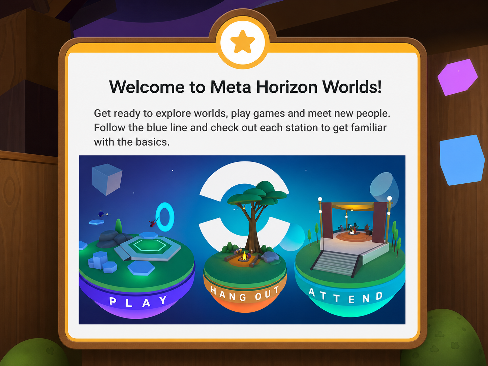
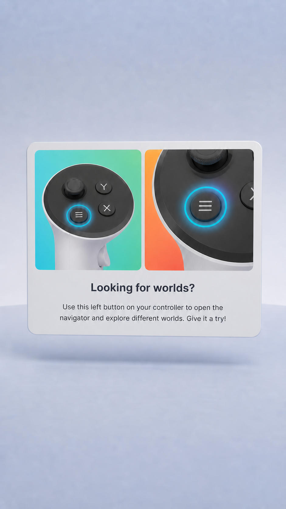
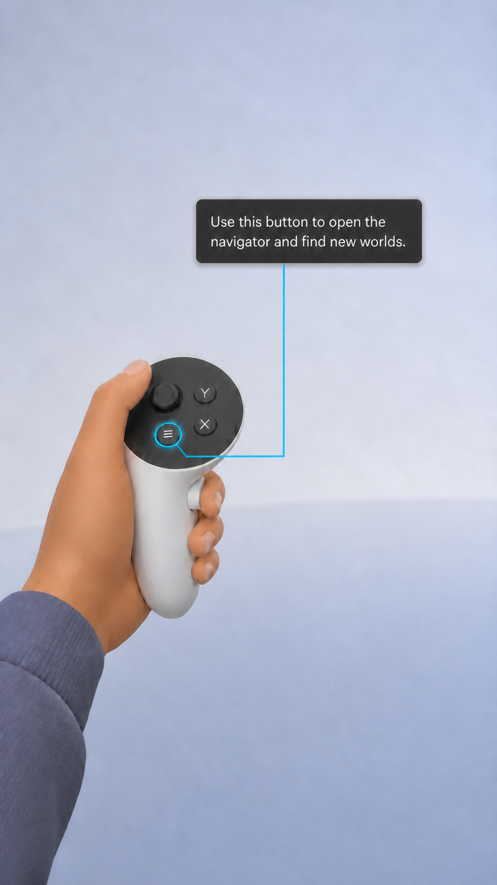
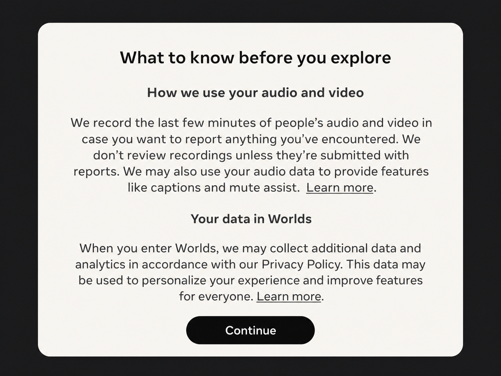

Results
Measured against the onboarding it replaced
- +13% first-world visits
- +7% retention
- Role
- Content designer · education strategy and interaction language
- Team
- Social Coordination V Team
- Timeline
- 2025
- Surface
- Meta Horizon Worlds, first-run VR
What I did
- Authored the just-in-time principles that became the foundation for how Horizon teaches users.
- Wrote every string in the just-in-time flow, including the controller nudge.
- Negotiated with Privacy Legal, Policy, and Product Counsel to consolidate six legal sequences into one tandem inform-and-remind design.
- Reframed the leadership review around getting people to the fun faster; it secured leads' buy-in with minimal pushback.
Product design owned the final interaction and visual design; engineering and partner teams handled implementation and experiment analysis.
Problem: the curriculum was the wrong shape for a social product
Every proposal on the table made the curriculum shorter or better sequenced. I argued the curriculum itself was the wrong shape. VR was already a new skill, and front-loading fourteen-plus lessons added information overload before anyone had context to use it. It also ignored the medium's advantage: education could live on the control and action that needed it, appear when someone tried, and stay silent otherwise.

Solution: the lesson lives on the control that performs it
When someone tried to talk while muted, the answer appeared on the controller already in their hand, where the old flow opened a panel. A second touch on a skill triggered off a change in the person's state, never a timer.
Before

After · shipped

Challenge: six legal notices couldn't just be cut
The front-loaded consent wall was one of six separate legal sequences across Horizon OS and Worlds, each its own block of text, and none of them could simply be cut. The resolution treated transparency as a property of the system rather than a screen: I negotiated a new location for the full inform modal in the mobile app, at a moment that met our transparency obligations and felt like the right time to read it, and the in-world notice became a one-line reminder, "Your audio is recorded for safety and other features," with a Learn more link. Inform on mobile, remind in-world. One tandem design met the legal bar and localization's character limits in every language, on both surfaces.
Before

After · shipped

Proof: Meta Quest onboarding adopted the just-in-time model
The team that owns onboarding across Meta Quest picked up the model afterward. The design goal from the start: an onboarding people finish without remembering being taught.
Building this meant designing the strategy, the strings, the legal design, and the leadership framing as one system. That is the shape of content design work I do now.